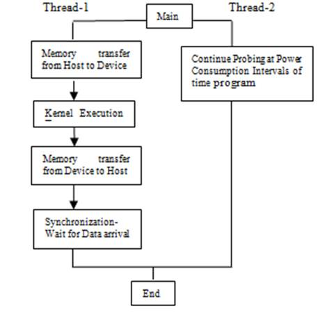

hyPACK-2013 : MODE-1 Multi-Core Coprocessors Power & Performance
Topics dealing with all practical and experimental aspects of various
programming paradigms
are considered on measurement of power consumption on Intel Xeon Phi Coprocessors
for application kernels in order to achieve the best sustained performance
with reduction in power consumption.
Modern chips come equipped with a set of power management
features: dynamic voltage and frequency scaling (DVFS) (e.g., P-states in Intel chips), clock gating, and automatic sleep states for
unused processor units (entire cores as well as individual functional
units, such as the L3-cache).
To date,
none have profiled multicore processors or chip multi-processing (CMP) and dynamic voltage and frequency
scaling (DVFS) at this level of granularity.
PowerPack for power-performance profiling
and evaluation of distributed systems and applications at
both component level and functional granularity have been used in HPC Centres.
Participants will get an opportunity to walk-through and execute
some of the programs related to measurement of Power Consumption as well as performance of Benchmarks on Intel Xeon Phi Coprocessor Systems.
in Mode-3 of this
workshop.
Understanding Intel's Xeon MIC architecture and programming
models for the Intel Xeon Phi coprocessor may enable programmers to achieve good performance
of their applications. Important tools and utilities used to measure power consumption for
application kernels in
hyPACK-2013 workshop are given below.
Intel Xeon Phi Coprocessor : micsmc
Intel Xeon Phi Coprocessor provides on-line tool micsmc to measure MIC related tasks.
micsmc : Provides a GUI to perform many MIC related tasks. The
available tasks include retrieving device and driver info, and
monitoring device performance, temperatures, and core usage.
Visit
http://software.intel.com/mic-developer
MIC Platform Status Panel (micsmc(1)) is a graphical tool designed to
facilitate the administration of Inte MIC devices. (micsmc(1)) can
function in two modes: GUI mode and command-line (CLI) mode. GUI mode
provides continuously updated information regarding MIC core
utilization, core temperature, memory used, and power usage statistics.
CLI mode produces similar information, but is a one-shot operation
which allows for use in scripting applications. By design, MicSmcoperates on all
cards in the system. GUI mode provides both
system-level and per-card views, while CLI mode always
operates on all cards.
(micsmc(1)) can also be used to perform more advanced functions: viewing
error logs, monitoring and connecting to MIC devices, viewing/rotating
logs, and changing individual card settings such as enabling ECC, power
states, and Turbo Modes on K1OM devices.
For more information regarding the usage of micsmc, please refer to
The Platform Status Panel User Guide. MICSMC can be invoked in command-line mode with different arguments to indicate
the results in the output of average and per core utilization levels
for each available board in the system and some of these features are given
below.
-
Results in the output of clock frequency and power levels for each
available board in the system.
-
Results in the output of general system info.
-
Results in the output of memory utilization data.
-
Results in the output of temperature levels for each available
board in the system.
-
To measure load on given system
The micsmc utility shows the coprocessor status and it cna run in graphical
or text mode interface. In graphical mode, it displays for all the Xeon Phi coporcessors
installed in the system the details of such features as core utilization,
memory usage, temperature, and power and error log. Utilities like
micinfo, micctrl -r, micctrl -w, miccheck can be used to get more information.
|
|
The Intelligent Platform Management Interface (IPMI)
The Intelligent Platform Management Interface (IPMI)
specification defines standards for monitoring server hardware characteristics
such as system temperatures, voltages, and power supplies.
IPMItool, an open source utility for managing and configuring
IPMI-compliant devices, enables administrators to monitor,
log, recover, inventory, and control hardware in Multi-Core servers through a simple baseboard management
controller (BMC) command-line interface (CLI).
IPMI 2.0 specification available at
http://www.intel.com/content/www/us/en/servers/ipmi/ipmi-home.html
|
|
Measure Power Consumptioon using External Power-Off Meter
On a Message Passing Cluster, the calculation of power consumption on host and the
Intel Xeon Co-processor using approriate
Programming (MPI, OpenMP, Pthreads, OpenCL) is required. The calculated
power consumption out of coprocessor, data transfer from host to device & device
to host, IO operations as well as initial programming environment will contribute to the total
power consumption of an application.

Figure 1. Typical Pthread Model for Calculation of Power Consumption on a system
Figure 1 explains the flow of completion of jobs in which two Pthreads are used. One thread
executes job on device and another thread probes the external power-off meter
and gathers the reported power values. Also, one thread works
on Xeon multi-coprocessor and records the power values for the entire system. Multiple threads can be used to bind multiple
accelerators and coprocessors to record the power consumed and master thread gathers the data and display on the portal. The resolution of power meter is in watts.
On Intel Xeon Phi Coprocessor, the micsmc and ipmi are used to measure real-time power
consumption of BLAS kernels and PDE solver. We analyzed the performance and real-time power
consumption of two fundamental linear algebra algorithms - DGEMM using above power utilities
in on-line and off-line
mode.
The power analyzer electricity watt meter is also used to measure the reported power values.
The Watt's Up power meter is an external measurement device that is plugged into the
system and it provides various measurements via a USB serial connection. The power metrics
collected include average power, voltage, current, and various others. Energy can be derived
based on the average power and time. The results are system-wide and low resolution, with
updates only once a second. Limited memory exists on power-meter and hence the reported power
values for computational performed are collected. Another thread reads the data on a regular
basis, and then returns overall values when an instrumented program requests it.
|
|
|
Mode-1 :
HPC Cluster with Intel Xeon Phi Coprocessors : Power & Performance:
-
Write your own program for NLA kernel codes and measure the power consumption and performance (turn around time & throughput) of Benchmarks.
-
Write your own program to measure the total power consumption and performance for
different problem sizes for implementation of PDE solver using
Finite Difference Method (FDM) based on OpenMP framework.
-
Write your own program for NLA kernel codes and measure the power consumption and performance (turn around time & throughput) of Benchmarks.
-
Write your own program to measure the total power consumption and performance for
different problem sizes for implementation of PDE solver using
Finite Difference Method (FDM) based on OpenMP framework.
|
|
|